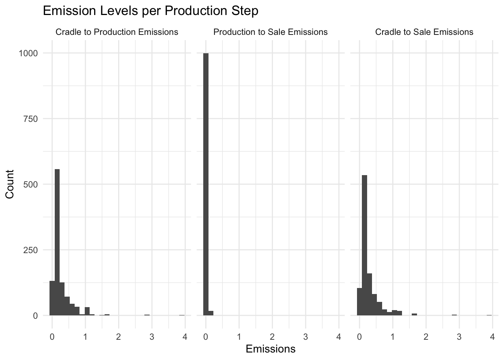
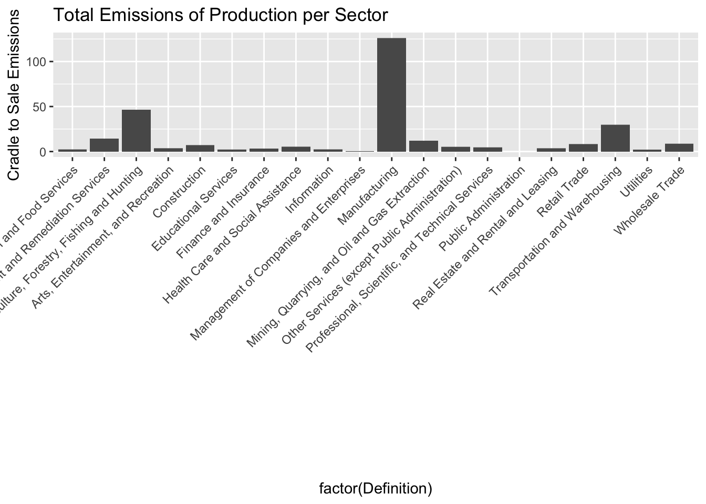

Question How do various U.S. commodities compare in their greenhouse gas emissions when assessed to the point of sale?
Intended Audience This is a rough overview of the topic intended for the general public.
Data Source This data comes from the U.S. EPA Office of Research and Development: https://catalog.data.gov/dataset/supply-chain-greenhouse-gas-emission-factors-v1-3-by-naics-6
Data Dictionary https://github.com/USEPA/supply-chain-factors/blob/5df4328f9b06e69f7b6d21af0baf391de669974e/format-specs/README.md
Data Wrangling
library(dplyr)
Attaching package: 'dplyr'
The following objects are masked from 'package:stats':
filter, lag
The following objects are masked from 'package:base':
intersect, setdiff, setequal, union
emissions <- emissions %>%rename("Class Code"= X2017.NAICS.Code, "Commodity"= X2017.NAICS.Title, "Cradle to Production Emissions"= Supply.Chain.Emission.Factors.without.Margins, "Production to Sale Emissions"= Margins.of.Supply.Chain.Emission.Factors, "Cradle to Sale Emissions"= Supply.Chain.Emission.Factors.with.Margins, "Reference USEEIO Code"= Reference.USEEIO.Code)
em_arranged <- emissions %>%arrange(desc("Cradle to Sale Emissions"))emissions2 <- emissions %>%select('Class Code', 'Commodity', "Cradle to Production Emissions", "Production to Sale Emissions", 'Cradle to Sale Emissions') #Top 3 Highest Cradle to Sale Emissionsemissions2 %>%slice_head(n=3)
Class Code Commodity Cradle to Production Emissions
1 111110 Soybean Farming 0.488
2 111120 Oilseed (except Soybean) Farming 0.488
3 111130 Dry Pea and Bean Farming 0.809
Production to Sale Emissions Cradle to Sale Emissions
1 0.044 0.532
2 0.044 0.532
3 0.040 0.848
#Top 3 Lowest Cradle to Sale Emissionsemissions2 %>%slice_tail(n=3)
Class Code
1 813930
2 813940
3 813990
Commodity
1 Labor Unions and Similar Labor Organizations
2 Political Organizations
3 Other Similar Organizations (except Business, Professional, Labor, and Political Organizations)
Cradle to Production Emissions Production to Sale Emissions
1 0.128 0
2 0.128 0
3 0.128 0
Cradle to Sale Emissions
1 0.128
2 0.128
3 0.128
#Check if cradle to sale emissions are a combination of the other two emission categories (rounding could cause +/- 1 error)check_values <- (abs(emissions2$'Cradle to Production Emissions'+ emissions2$'Production to Sale Emissions') - emissions2$'Cradle to Sale Emissions') <=1if (all(check_values)) { result <-"All columns add up."} else { result <-"NOT all columns add up."}print(result)
[1] "All columns add up."
#What is the distribution of Cradle to Sale Emissions?emissions_long <- emissions2 %>%pivot_longer(cols =c(`Cradle to Production Emissions`, `Production to Sale Emissions`, `Cradle to Sale Emissions`), names_to ="Emission Type", values_to ="emissions")ggplot(emissions_long, aes(emissions)) +geom_histogram(binwidth =0.15) +facet_wrap(~factor(`Emission Type`, levels =c("Cradle to Production Emissions", "Production to Sale Emissions", "Cradle to Sale Emissions"))) +labs(x ="Emissions", y ="Count") +ggtitle("Emission Levels per Production Step") +theme_minimal()

Note
It appears that the Production to Sale emissions are generally less than Cradle to Production emissions - GHG emissions are released more during the cradle to production phase of making a commodity.
#Is there a correlation between Cradle to Production Emission and Production to Sale Emission?ggplot(emissions2, aes(x =`Cradle to Production Emissions`, y =`Production to Sale Emissions`)) +geom_point() +geom_smooth(method='lm') +ggtitle("Production to Sale versus Cradle to Production Emissions")
`geom_smooth()` using formula = 'y ~ x'
Note
There seems to be a trend here where when a commodity releases more GHGs in the cradle to production phase, it is positively correlated with releasing more GHGs in the production to sale phase as well.
#Which sector releases the most GHGs?sector <-read.csv('/Users/dhruthi11/Desktop/class codes.csv')emissions2$sectors <-str_extract(emissions2$`Class Code`, "\\d{2}")emissions2$sectors <-as.integer(emissions2$sectors)emissions3 <- emissions2 %>%full_join(sector, by =c('sectors'='Sector'))#missing sector does not have information availableemissions3 %>%filter(is.na(Definition) |is.na(`Cradle to Sale Emissions`))
Class Code Commodity Cradle to Production Emissions
1 NA <NA> NA
Production to Sale Emissions Cradle to Sale Emissions sectors
1 NA NA 92
Definition
1 Public Administration
ggplot(emissions3, aes(factor(Definition), `Cradle to Sale Emissions`)) +geom_bar(stat ="identity") +theme(axis.text.x =element_text(angle =45, hjust =1)) +ggtitle("Total Emissions of Production per Sector")
Warning: Removed 1 row containing missing values or values outside the scale range
(`geom_bar()`).

Sector
Definition
11
Agriculture, Forestry, Fishing and Hunting
21
Mining, Quarrying, and Oil and Gas Extraction
22
Utilities
23
Construction
31 - 33
Manufacturing
42
Wholesale Trade
44 - 45
Retail Trade
48 - 49
Transportation and Warehousing
51
Information
52
Finance and Insurance
53
Real Estate and Rental and Leasing
54
Professional, Scientific, and Technical Services
55
Management of Companies and Enterprises
56
Administrative and Support and Waste Management and Remediation Services
61
Educational Services
62
Health Care and Social Assistance
71
Arts, Entertainment, and Recreation
72
Accommodation and Food Services
81
Other Services (except Public Administration)
92
Public Administration
Note
The Manufacturing sector releases much more GHGs than any other sector in the U.S. from cradle to sale.
Summary
Data from the US EPA Office of R&D outlines emissions released from each sector of commodities manufactured in the US to compare the emissions per stage (Cradle to Production and Production to Sale) as well as between sector. Production and Sale Emissions are lower then Cradle to Production Emissions for most or all commodities, with a positive correlation between the emissions of the two stages. Manufacturing is a huge source of emissions with Culture, Forestry, Fishing, and Hunting, as well as Transportation and Warehousing being second and third highest in emissions. Public Administration and Management of Companies and Enterprises are the lowest in total emissions. These results can be used to determine which US commodities and production sectors need to be targetting for reducing emissions (manufacturing) through research and policy. It would be interesting to look into what sorts of research has been done using this dataset.